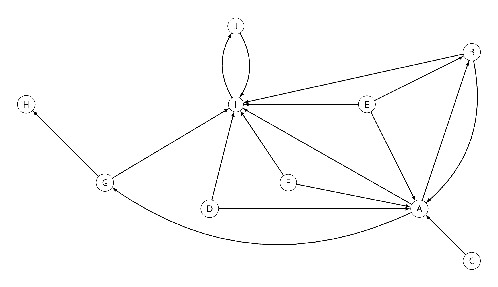

Les moteurs de recherche
Historique
Fonctionnement
Le fonctionnement d'un moteur de recherche se décompose en trois processus principaux :
- L'exploration : (crawl en anglais) le web est exploré par un robot d'indexation (un bot) suivant les hyperliens qu'il trouve et récupérant les ressources jugées intéressantes.
- L'indexation : les mots considérés comme significatifs sont enregistrés dans une base de données.
- La recherche : un algorithme est appliqué sur la base de donnée obtenue par l'indexation pour filtrer les pages webs et les trier par ordre de pertinence supposée. Avant de traiter la recherche, la requête passe par un correcteur orthographique, un lemmatiseur (remplace les verbes conjuguées par leur infinitif, les nom au pluriel par leur singulier, ...) et un anti-dictionnaire qui supprime les mots non pertinents (le, la, de, ...).
PageRank
Le PageRank est l'algorithme d'analyse des liens concourant au système de classement des pages Web utilisé par le moteur de recherche Google. Il mesure quantitativement la popularité d'une page web. Le PageRank n'est qu'un indicateur parmi d'autres dans l'algorithme qui permet de classer les pages du Web dans les résultats de recherche de Google. Ce système a été inventé par Larry Page, cofondateur de Google. Ce mot est une marque déposée.
Approche théorique
Le PageRank modélise la probabilité qu'un visiteur ouvre une page web s'il navigue de façon aléatoire. Le PageRank d'une page dépend des PageRank de toutes les pages qui pointent vers elle. La formule habituelle du PageRank d'une page choisie est la suivante :
0,15n + 0,85 × Somme ( PageRank(p)nombre de liens de la page p)
où :
- n est le nombre total de sites
- la Somme porte sur l'ensemble des pages qui pointent vers la page choisie.
Exemple :
On considère uniquement les pages ci-dessous.
Comme il y a 10 pages, n = 10
Les pages B, C, D, E et F ont un lien qui mène vers A.
Le PageRank du site A se calcul grâce à la formule :
0,1510 + 0,85 × ( PageRank(B)2 + PageRank(C)1 + PageRank(D)2 + PageRank(E)3 + PageRank(F)2 )
Estimation du PageRank
Comme les PageRank dépendent les uns des autres, il n'est pas possible de les déterminer par un simple calcul. Il faudrait écrire un système de n équations à n inconnues ce qui est très coûteux (en puissance de calcul) à résoudre.
On utilise alors une autre méthode pour calculer ce PageRank :
- On commence par attribuer un PageRank égal à 1n à toutes les pages.
- A chaque fois que le bot parcours une page lors de l'exploration, il met à jour le PageRank avec la formule vue plus haut et les PageRank des pages à ce moment là (qui sont déjà des estimations.)
Après plusieurs itérations, l'estimation des PageRank est proche des valeurs théoriques suivantes :
| Site | A | B | C | D | E | F | G | H | I | J |
|---|---|---|---|---|---|---|---|---|---|---|
| PageRank | 0,06017 | 0,0363 | 0,015 | 0,015 | 0,015 | 0,015 | 0,03205 | 0,02862 | 0,32739 | 0,29327 |